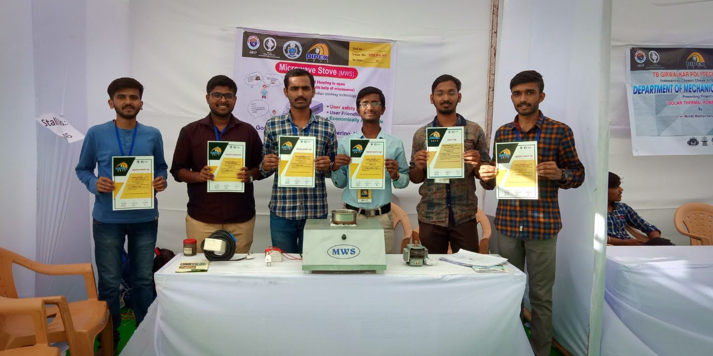
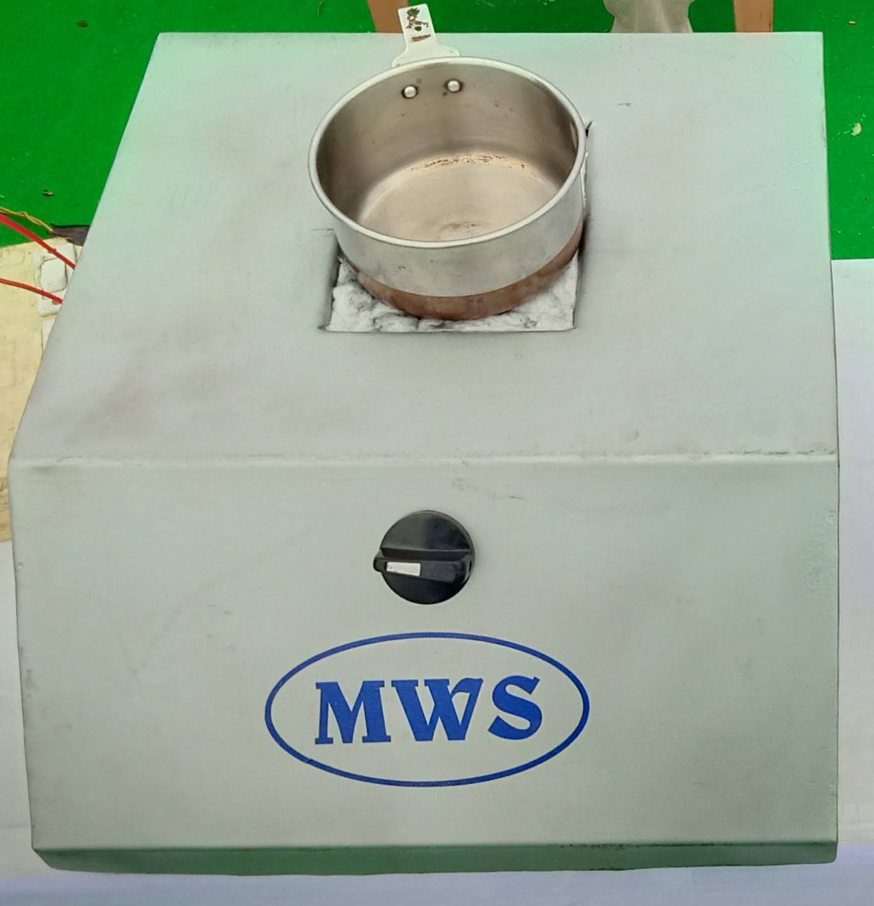
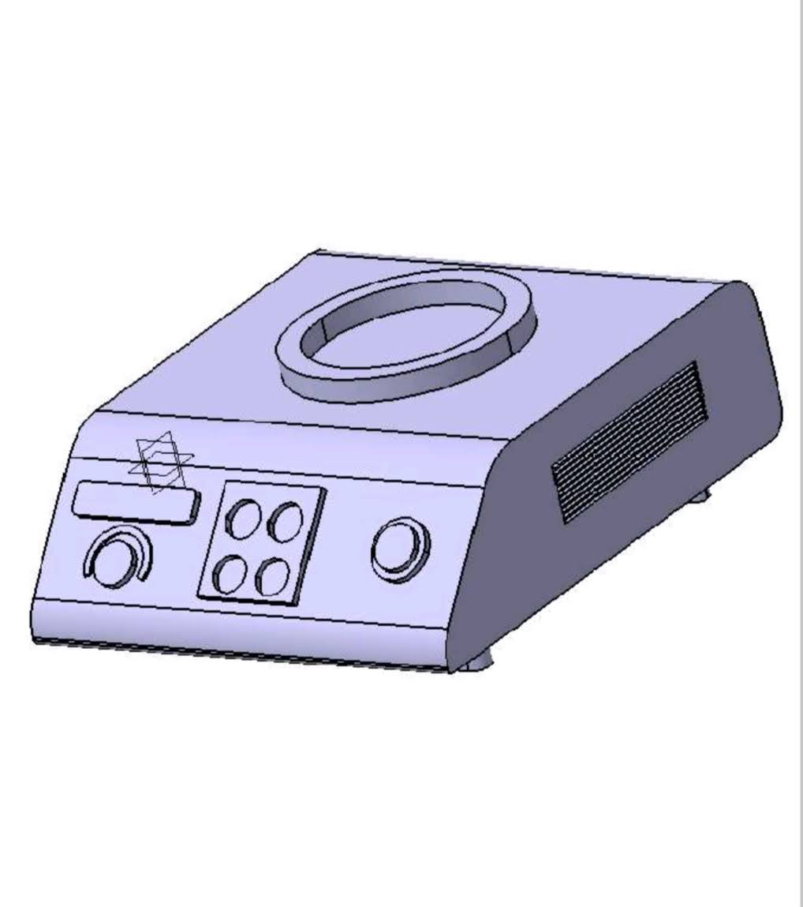
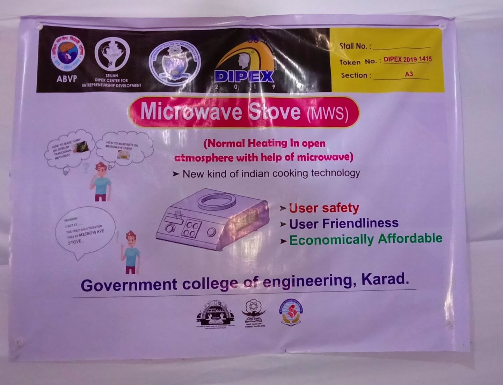

Proof-of-concept work built around actual demonstrations.
A working prototype exists. The prototype has been demonstrated in lab conditions, water heating and control experiments were performed, and microwave intensity could be adjusted using a knob during proof-of-concept work.
These demonstrations helped validate the concept at a lab level and created a foundation for the next engineering stage.

Prototype photos
Gallery from public demonstrations and experiments.
All visuals on this page are used as public-safe proof-of-concept material and do not disclose confidential internals.





Demo video
Prototype video from proof-of-concept work.
Demo video section showing a public-safe view of the prototype in action.
Lab experiments
The proof-of-concept stage included heating demonstrations, control tests, and practical observation of the hybrid cooking approach under lab conditions.
Water heating and control experiments were performed.
Microwave intensity could be adjusted using a knob.
Lab experiments helped validate the concept direction.
The current prototype has been demonstrated at around ~800W input power.
Key observations
- Working prototype exists.
- Prototype has been demonstrated in lab conditions.
- The concept supports a stove-like format rather than a closed microwave cavity experience.
- The proof-of-concept work justifies further engineering and validation.
Disclaimer
These demonstrations are lab-level proof-of-concept results and not final commercial product performance.